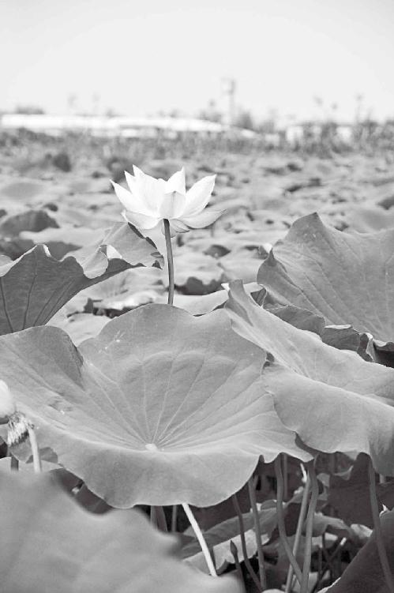
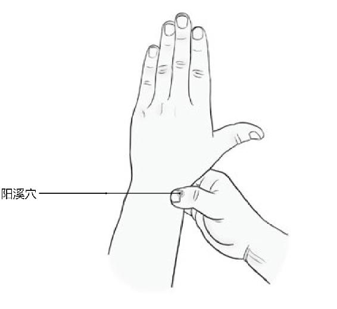
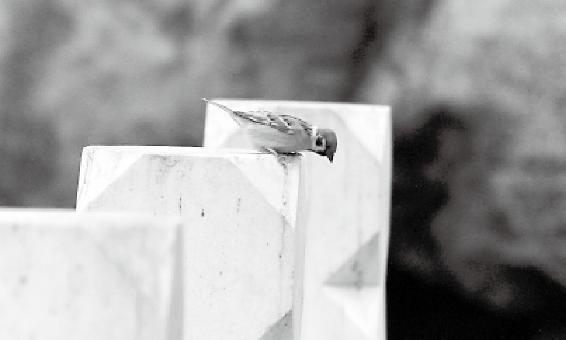
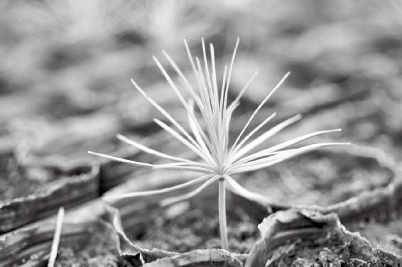
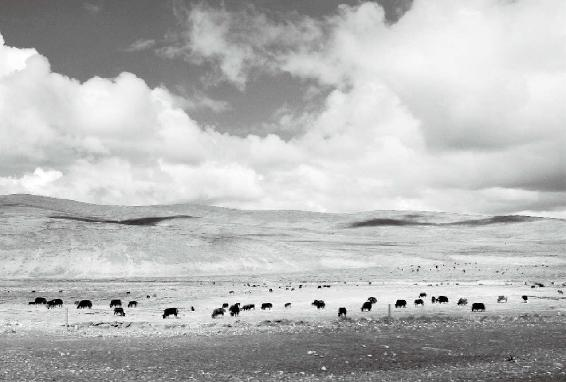
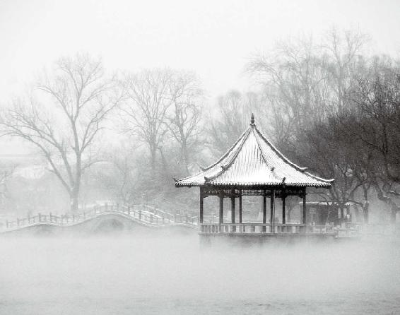

如果你是一只蝴蝶，就别想变成一只苍蝇。作为一只苍蝇，你能改变什么呢？你能改变的是在厕所飞，还是在厨房飞。
种子的DNA改变不了，但能改变的是生活在一块肥沃的土壤，还是一块贫瘠的土壤里。或者上面有块大石头压着，但小苗能坚持着扭曲地或者顺溜溜地长出来。这是普通人能改变的“运”。
只有那些幼稚的、思维简单的人才想让别人跟自个儿一样，把别人都改变成他那样的人。
经文：
黄帝曰：余闻上古有真人者，提挈天地，把握阴阳，呼吸精气，独立守神，肌肉若一，故能寿敝天地，无有终时，此其道生。中古之时，有至人者，淳德全道，和于阴阳，调于四时，去世离俗，积精全神，游行天地之间，视听八达之外，此盖益其寿命而强者也，亦归于真人。
“余闻上古有真人者，提挈天地”
徐文兵：其实“上古天真论”基本上可以分为三段。第一段，黄帝问：有的人半百而衰，他们是因为将身不当，还是因为天数是这样？岐伯回答时，提出了一个健康的生活观念，告诉我们该怎么做避免“半百而衰”。第二段，黄帝又提出了一个问题，问：人年老而无子，是材力尽了，还是天数的原因？岐伯分别讲述了女子每七年、男子每八年的生理周期变化。接下来我们要讲的就是第三段，我给它起了个标题。
梁冬：叫什么？
徐文兵：“做人要做这样的人”。
梁冬：做真人嘛！
徐文兵：道家将做人的理想分成了四个层次—真、至、圣、贤，前面我们已经提到了，就是说我们现在人可怜巴巴的，为什么活着呢？为衣食温饱欲望，为我能不得病或者少得病，为能多活几年，这样活着的层次太低了。
道家将做人的理想分成了四个层次—真、至、圣、贤。
我们现在人可怜巴巴的，为衣食温饱欲望，为我能不得病或者少得病，为能多活几年，这样活着的层次太低了。
梁冬：能这样活就不错啦！
徐文兵：我们现在都觉得，有份工作不失业，供套房子，然后娶个媳妇儿，生个孩子，把孩子抚养成人，自个儿能正常拿到退休金，生个病也别拖累孩子，这样就行了。
别看今天的社会如此进步，其实我们活得很可怜，远没有古代那些接近自然、淳德全道的人活得潇洒、幸福、快乐。今天我们给大家指一个方向，做人要做什么样的人呢？
别看今天的社会如此进步，其实我们活得很可怜，远没有古代那些接近自然、淳德全道的人活得潇洒、幸福、快乐。
第一种，真人，就是那些完全与天地同步、和谐共振、更接近自然的人。他们到底活在一种怎样的状态下？咱没吃过猪肉，起码见过猪跑，是吧？可惜很多人没读过《黄帝内经》，连古人活什么样儿，就是说那些真正幸福的活法都不知道，今天就给大家展示一下。
可惜很多人没读过《黄帝内经》，连古人活什么样儿，就是说那些真正幸福的活法都不知道。
梁冬：上古有真人。
徐文兵：在远古最接近自然的状态下，上古之人都是餐风饮露、茹毛饮血，活得很卑微、很可怜的，这是我们现在很多人的印象。我建议有这种思想的人去参观一下殷墟，参观一下四川的三星堆，去看看古代人创造的文明，看完你就不会轻易贬低古人了。
“余闻上古有真人者，提挈（qiè）天地”。“提”是往上提，“挈”是什么？拉着。鲁迅有句诗：“挈妇将雏鬓有丝。”就是拉扯着自己的老婆孩子，混得鬓角的白发都出来了。本来人是什么？天地的产物，天怎么变你就该跟着变。可这些人活到了可以影响自然的程度，甚至活到了可以掌握自己的命的程度。
本来人是天地的产物，天怎么变你就该跟着变。可有些人活到了可以影响自然的这种程度，甚至活到了可以掌握自己的命的这种程度。
梁冬：这就叫“提挈天地”吗？
徐文兵：对，就是说真人能影响天地的变化。
梁冬：之前，我们一直讲的就是要顺应天地的变化。
徐文兵：我们是什么人？人家是什么人？晋朝时候有一位非常伟大的道家，也是中医学家—葛洪，他说了一句话：“我命由我不由天。”
乍一看这话，可能会想这人真狂啊！不过，人家的确是在掌握自然变化规律的基础上去做了些事情。
徐文兵：我们在这儿说一下“命”和“运”，什么叫“命”？“命”拆开是两个字，“口”和“令”。
谁的口令？天的口令。老天爷给你安排好的东西，变不了。我们经常说要改变自己的命运，那你是想改变自己的“命”还是“运”呢？“命”是天命，“运”是人为。天命不可改，举例来说，如果你是一只蝴蝶，就别想变成一只苍蝇。或者说，你身为苍蝇，就别想变成别的什么东西。
如果你是一只蝴蝶，就别想变成一只苍蝇。
梁冬：变成苍鹰，大漠上的一只鹰。
徐文兵：呵呵，变不成苍鹰。但是作为一只苍蝇，你能改变什么呢？你能改变的是你在厕所飞，还是在厨房飞。
作为一只苍蝇，你能改变什么呢？你能改变的是在厕所飞，还是在厨房飞。
梁冬：这是不一样的，对不对？
徐文兵：这是“运”。
梁冬：“人生如鼠，不在仓则在厕”嘛。
徐文兵：李斯说的。在当厕所里的老鼠和粮仓里的老鼠之间，李斯选择了后者，不过他最后死得很惨。他就没得道，也没掌握好该在哪儿吃。作为一只苍蝇，如果你选择在厨房里飞，可能吃香的喝辣的。
梁冬：但是也容易被拍死。
徐文兵：如果你在厕所里飞，虽然追腥逐臭，但也可能活得很逍遥。这种选择是能改变的，叫“运”。我们普通人能改变自己的运，但改不了自己的命。套用一种时髦的观点：你改变不了自己的DNA。
我们普通人能改变自己的运，但改不了自己的命。套用一种时髦的观点：你改变不了自己的DNA。
梁冬：你这么一说，就科学了。
徐文兵：这颗种子的DNA改变不了，但能改变的是生活在一块肥沃的土壤，还是一块贫瘠的土壤里。或者上面有块大石头压着，但小苗能坚持着扭曲地或者顺溜溜地长出来。这是普通人能改变的“运”。
种子的DNA改变不了，但能改变的是生活在一块肥沃的土壤，还是一块贫瘠的土壤里。或者上面有块大石头压着，但小苗能坚持着扭曲地或者顺溜溜地长出来。这是普通人能改变的“运”。
真人则不同，他能影响天地的变化。现在还有一种科学理论，说南美的一只蝴蝶振动一下翅膀，结果北半球可能就掀起了一场台风或者暴风雨。
梁冬：蝴蝶效应。
徐文兵：现代科学认识到了蝴蝶与台风的关系，已经进步了。但是，大家想想“诸葛亮借东风”。赤壁边儿七星坛上有一个人在那儿舞剑，结果怎么样？
梁冬：会不会影响到风的流向呢？
徐文兵：掀起了一场东风。现代人这才意识到那儿有只蝴蝶在振翅膀，会掀起一场风暴，而我们中国古人已经知道了在这个坛、这个时间、这个地点、舞什么剑、走什么步就会影响风向，半夜子时过后到丑时，原来刮着的西北风就会变成东南风。
中国古人已经知道了在这个坛、这个时间、这个地点、舞什么剑、走什么步，就会影响风向。
梁冬：就是有意识地做了那一只蝴蝶。
徐文兵：你精辟地总结了我的话。这一场“借东风”，就是“提挈天地”的表现。它是在了解天地变化的基础上，还做了一些人为的东西，导致了这个变化。
所以古代很多高人，常说天机不可泄露，所谓顺势而为、水到渠成。诸葛亮为什么出山？他已经算到了，目前这种生灵涂炭的局面需要一些改变。
梁冬：需要他出来。
徐文兵：需要有一个人去做一点儿什么，来完成三分天下，鼎足而立，维护一方平安的一个工作，所以他是顺势而出。
我刚才讲的开国的那些大宰相、元勋，都是道家，本来他们自得其乐、恬淡虚无，过得挺好，但在关键时刻看到生灵涂炭，于心不忍就出山了。尧帝要将天下让给许由，许由却坚决不肯接受让他当皇帝都不愿意，为什么？他追求自得其乐的生活，可是到了天下民不聊生的时候，他就立刻出山去拯救百姓苍生，这就是“提挈天地”。
尧帝要将天下让给许由，许由却坚决不肯接受，让他当皇帝都不愿意，为什么？
梁冬：我觉得这是您讲的最有趣的一段。“提挈天地”这四个字，我以前也看过，但从来没有想过，去有意识地做一只能引起“蝴蝶效应”的蝴蝶。
真人就是有意识地做了一只能引起“蝴蝶效应”的蝴蝶。
徐文兵：再举一个例子，在蒙古人大肆屠杀无辜、攻城掠地的情况下，丘处机挺身而出，穿越大漠去见成吉思汗，劝他不要杀生。就因为他，很多的生命得到了拯救，丘处机也因此受到了统治者的敬重。
梁冬：丘处机也是真人，他本来是修道的。
徐文兵：他又叫丘真人。
梁冬：还有一个叫耶律楚材的人，他虽然是蒙古人，但是据说他对中国文化的理解非常深刻。
徐文兵：他是蒙古人，但是内心完全是淳德全道，接受了中国传统文化的熏陶。现在，一提起中国传统文化，大家就会想到儒学是吧？
儒家学说的创始人孔子，生活在公元前500年，距今两千五百年，难道我们的历史就这么短吗？很多人说“天不生仲尼，万古如长夜”，那没有孔子之前，人们过的都是黑暗的日子吗？当然不是，是“道”的阳光照耀了我们中华民族几千年甚至上万年。
“道”的阳光照耀了我们中华民族几千年甚至上万年。
梁冬：虽然可能也有部分孔子的支持者不苟同您的观点。
徐文兵：我一点儿都没有贬低儒学，你看《三国演义》里还有个诸葛亮“舌战群儒”的故事呢。
这明显就是道家和儒家的一次交锋，但是诸葛亮本身一点都没说儒家不好，他说的是那些腐儒，就是看书看到最后死在章句下的人。诸葛亮说这些人是什么？“寻章摘句、皓首穷经，笔下虽有千言，胸中实无一册”。你读书读死了，既维持不了自己的身心健康，活得很痛苦，还拯救不了身边的黎民百姓，无法给他们治病，并且也改变不了社会发展的方向，你说你活个什么劲？干脆自残得了。
所以儒和道历来都有争论，但是没有一个道家贬低儒家，我们贬损的是那些腐儒，是把书读死了的那些人。包括中医也是如此，有人自称儒医，但却不修身、不养性、不练功，没有气的感觉，就说自己会开方子。所以中医的没落，正是由于这些人胡搞瞎搞，将一种勇于实践、勇于入世、勇于亲自临床实践去拯救病人的道的方法，转成了那种死读书、读死书、寻章摘句的儒学研究的方法。包括现在，你看很多中医都在干什么？搞科研，跟那个大白鼠较劲。
没有一个道家贬低儒家，我们贬损的是那些腐儒，是把书读死了的那些人。
很多中医都在搞科研，跟那个大白鼠较劲。
梁冬：拿个白鼠来针灸，看看效果。
徐文兵：然后一步一步的搞科研，这其实是一种误区。
梁冬：悲哀。
“把握阴阳”
梁冬：“把握阴阳”该怎么解释？
徐文兵：就是把握阴阳的变化。我们前面讲过“法于阴阳”，是什么意思？
梁冬：顺应阴阳变化。
徐文兵：一个是“法于阴阳”，一个是“把握阴阳”。一个是做阴阳的奴隶，一个是把握阴阳，利用阴阳。
梁冬：有那种把阴阳玩弄于掌股之间的意味？
徐文兵：对，这就是高人！是到了很高境界的人才能做到的事情，他会影响到阴阳的变化。
东风压倒西风，西风压倒东风，这就是阴阳的变化。本来赤壁之战是冬至那天，冬至一阳生，所以他利用这种天地之气，就掀起了更厉害的阳气，这种做法就是把握阴阳。医生给病人看病，我不敢说“提挈天地”，只能说我们在“把握阴阳”。
一个善于给病人做诊断的人，他通过给你“望闻问切”，第一件事做完以后，他先知道你是什么症状，就是先认识阴阳，然后把握阴阳。
《黄帝内经》说“善诊者，察色按脉，先别阴阳”，就是说一个善于给病人做诊断的人，他通过给你“望闻问切”，第一件事做完以后，他先知道你是“阴症、阳症、虚症、寒症、热症、实症”，这就是先认识阴阳，然后把握阴阳，热者寒之，寒者热之。
比如说热实症，我们扎针；虚寒症就做艾灸；有脓肿的地方，用砭石。这都是把握阴阳。
人体也是个小宇宙，出现一些病痛、疾患，是因为阴阳失去了平衡，失去了内在的一种关系。而掌握了道的人，或者了解到人的这种生理变化的人，去把握阴阳，就能拯救人于水火、危难之中。
人体也是个小宇宙，出现一些病痛、疾患，是因为阴阳失去了平衡，失去了内在的一种关系。
梁冬：有些人理解错误，以为中医是搞有神论，其实从另外一个角度看，把握阴阳是典型的辩证唯物主义。
徐文兵：很科学的辩证唯物主义。
从另外一个角度看，把握阴阳是典型的辩证唯物主义。

“呼吸精气”
徐文兵：接下来讲“呼吸精气”。一个人是如何做到“真人”境界的呢？首先是呼吸精气。精是物质，气是能量。我们在吸氧，氧是物质，但同时我们也在吸气。这个气是什么？不同的地域场合、不同的环境，它有一种能量。真人能够找到那些拥有最好的空气或者最富有能量的地方去生活，在那儿呼吸吐纳，修身养性。
真人能够找到那些拥有最好的空气或者最富有能量的地方去生活，在那儿呼吸吐纳，修身养性。
“呼吸精气”的反义词是“呼吸浊气”。空气污染的问题，想必大家都不陌生。含有二氧化碳、二氧化硫或者粉尘、悬浮物、颗粒物等的不良空气，就是浊气。还有，“精”后面的那个“气”不是物质，而是一种无形的能量。比如你有时到了某个城市以后，就会不由自主地被一种力量推动。
含有二氧化碳、二氧化硫或者粉尘、悬浮物、颗粒物等的不良空气，就是浊气。
脚步加快了，心情就激动、浮躁了，然后，心率跟着就加快，这是气对你的一种影响。
梁冬：其实我觉得这是一种频谱。
徐文兵：“气”就是一种类似电磁波、频谱的东西。就是你到了一个地方，让你受影响的一种物质。比如，你在北京有这种感觉，到了香港可能感觉更厉害。
梁冬：在不同的地方感觉会很不一样。
徐文兵：现在的工业污染，包括汽车尾气，以及抽烟等都是浊气的来源。二手烟的危害甚至超过一手烟。
梁冬：于是有的人就主张，如果不能吸二手烟，那就吸一手烟。我们对此是反对的。
徐文兵：我本人是反对抽烟的。但是，道家有句话叫“物无美恶，过则为灾”，也就是说抽烟也有它有利于身心健康的一面，所以不要走极端，认为抽烟一无是处。比起你呼吸汽车尾气的危害来，你抽一种自然植物燃烧的烟的害处是可以忽略不计的。
道家有句话叫“物无美恶，过则为灾”，也就是说抽烟也有它有利于身心健康的一面，所以不要走极端，认为抽烟一无是处。
但和你呼吸新鲜空气相比，当然抽烟的危害更大。说起抽烟对人身体的影响，我们可以用一个成语来概括，就是“置之死地而后快”。
比起你呼吸汽车尾气的危害来，你抽一种自然植物燃烧的烟的害处是可以忽略不计的。
梁冬：此话怎解？
徐文兵：当空气的含氧量突然下降以后，人会突然产生一种应激反应。就是说，本来氧气很足的情况下，你突然抽一口烟导致烟雾进入体内，这时身体出于本能会紧张，心跳加速，流向四肢的血就会被临时抽调到心脑。
这时候，抽完烟的人就有一种快感或者说欣慰感，而且写文章的人没准还会有一点儿灵感，但这其实是把你置之死地以后的状态。这种快感是身体的一种本能反应，当身体本能还很强的时候，这种反应就会有；当身体很弱的时候，把你置之死地，你就死了，本能反应也没有了。
抽完烟的人就有一种快感或者说欣慰感，而且写文章的人没准还会有一点儿灵感，但这其实是把你置之死地以后的状态。
梁冬：怪不得贾平凹曾经在一篇散文里面讲过“知识分子多有脚气”，为什么呢？就是知识分子在抽烟写东西的时候，他的气血都往心脑里去了。
徐文兵：没错！
梁冬：所以，人体的末梢，比如手、脚等，就会阳气不足，自然就会有脚气了。
知识分子多有脚气。
徐文兵：所以抽烟给人带来的最大影响是末梢循环会变得很差。一根烟下去，灵感倒是有了，手脚开始凉了。我们看到很多人患有“血栓闭塞性脉管炎”，这种病会有什么症状呢？患者的手指或脚趾的末端开始变黑、发凉，一截一截坏死，最后不得不截肢。
不要突然戒烟，可以慢慢减少抽烟的量。通过其他的方式来提高你的心肺功能，而不是通过某种恶性刺激的方式。
梁冬：据说有些糖尿病人也是这样的。
徐文兵：对，坏疽患者也有这样的情况。患这些病的病人，你可以调查一下，他们大多都抽烟。
梁冬：如果有些人已经抽烟了，那如何能够不让问题变得那么严重呢？
徐文兵：抽烟是激发人潜能的一个方法。就像你身体强壮的时候，通过洗冷水浴，可以把体内的阳气激发出来。所以，在抽烟和身体本能反应之间应该有个平衡。
对于抽烟的人来说，烟就像一根拐杖，你突然把它戒掉了，把拐杖扔了，身体就会不适应，失去平衡。所以我建议大家，不要突然戒烟，可以慢慢减少抽烟的量。通过其他的方式来提高你的心肺功能，而不是通过某种恶性刺激的方式。
抽烟给人带来的最大影响就是，末梢循环会变得很差。
徐文兵：我们说“棍棒底下出孝子”，教育孩子的方法有很多种，不是说非得打他。同样的道理，提高心肺功能的方法有很多种，不一定要通过抽烟来达到这个目的。比如，中医通过刺激一些穴位就能帮助人提高肺气，提高肺对空气的利用率。刺激完这些穴位以后，你就会觉得，自己对烟好像没什么欲望了，或者一抽就感觉烟的味道变了。
中医通过刺激一些穴位就能帮助人提高肺气，提高肺对空气的利用率。
梁冬：主要有什么穴位呢？
徐文兵：我给大家推荐个穴位，属于大肠经，叫阳溪穴，位于手阳明大肠经的第五个穴，在合谷穴的上面。这个穴位很好找，就是把大拇指一翘，大拇指的根部就会出现两个肌腱，它们形成的那个“坑”就是阳溪穴。

阳溪穴是你戒烟的好帮手。每天揉揉这个穴位，不但能让你对烟失去欲望，还能帮你补肺气。
想自个儿戒烟，或帮老公（老婆）戒烟，就天天替他（她）揉揉这儿，可以增补肺气。
另外一个问题就是抽烟的时候，手脚冰凉，怎么做才能让手脚热呢？喝酒是一种方法。
梁冬：那会不会有新的问题？
徐文兵：其实真正的平衡是左手抽一支烟，右手喝一杯酒。但这是一种恶性刺激状态下的平衡。
其实真正的平衡是左手抽一支烟，右手喝一杯酒。但这是一种恶性刺激状态下的平衡。
梁冬：我们特别强调一下，左手一支烟，右手一杯酒，是一种恶性循环，是一种短期行为。
“独立守神”
徐文兵：请问什么是“独立守神”？
梁冬：这个“独立守神”是说，在整个过程中不要动来动去，能站着就不错了。
徐文兵：现在人都是浮躁多动症，手足无措。
梁冬：晚上还出去跑步，或者到健身房去跑步，真是疯掉了。
晚上还出去跑步，或者到健身房去跑步，真是疯掉了。
徐文兵：很多人问我：“徐大夫，生命在于运动，您难道觉得这句话不对吗？”我说当然对了，那到底应该怎么锻炼呢？
梁冬：运动。
徐文兵：您是说“运”还是说“动”？
梁冬：“运”和“动”怎么区别？
徐文兵：现在大家说到“运动”其实都只是在“动”，其实“动”是动脚，“做”是动手，“运”是什么？
梁冬：“运”是“运化”吧？
徐文兵：对，你看运的繁体“運”，底下是“辶”，上面是个“车”。
它是指我们身体内脏的运化、传导，比如，你吃东西是从上面吃进去，再从下面排出，这叫“运”。“动”容易，它受你后天的意识支配。比如你身体健康，想要动动手、动动脚，可以随心所欲；但是如果你偏瘫了，那就想动哪儿都动不了。而“运”则不受你意识控制。
你吃东西是从上面吃进去，再从下面排出，这叫“运”。
梁冬：是的。比如说让你马上放一个屁，恐怕没那么容易。
徐文兵：可能有的人不消化，有的人便秘，譬如“放屁”之类的事情是受身体里另外一套系统控制的，也就是受心神的控制。那怎么让它“运”起来？“动”起来很容易，怎么让它“运”起来却不容易。“运”和“动”正好是相反的，就是相互对立的。
“运”和“动”正好是相反的，就是相互对立的。
梁冬：是吗？
徐文兵：一对冤家，比如说当你动得太多的时候就会不运。打个比方，你刚跑完马拉松，马上让你吃顿饭，你肯定吃不下，一点胃口没有，为什么？因为全身的气血能量都在往肢体上流，而往身躯流的很少，无法“运”。从顺应自然的角度来讲，人先顾身躯，后顾肢体，是吧？一个是主干，一个是末梢，这你得分清楚。所以，如果你想让它“运”怎么办？先不“动”。
你刚跑完马拉松，马上让你吃顿饭，你肯定吃不下，一点胃口没有，为什么？
很多人说：“你不让我动，那太好了，我就不动。”你如果真的摆个姿势站那儿不动试试，大多数人往那儿一站，用不了一分钟就开始躁，一会儿抓耳挠腮，一会儿浑身刺痒，最后他不由自主地就要动。
梁冬：掏出手机来看看短信什么的。
徐文兵：现在人静不下来。“动”得太多，“运”就必然会很少。很多人消化功能出问题就是这个原因。怎么让它运化、运作起来？《黄帝内经》就告诉你了：呼吸精气。如果你整天呼吸的是浊气或者是腐败之气的话，你身体就不会好。在呼吸精气的基础上怎么办呢？“独立守神”。“立”是什么？站那儿不动。
如果你整天呼吸的是浊气或者是腐败之气的话，你身体就不会好。
梁冬：不许动！
徐文兵：很多人做不到，不信你试试。我最早跟马世琦老师学形意拳站桩，就是学站桩的第一式，我跟马老师说度秒如年！
梁冬：度秒如年？
徐文兵：就是，我在那儿看秒针“嘣儿嘣儿”一秒一秒蹦，就感觉时间那么漫长，身上的汗就下来了，但还是咬着牙坚持。
梁冬：您最多能坚持多长时间不动？
徐文兵：现在一个小时、两个小时都可以。但在那会儿就是躁，气血老不关注自己最重要的脏器、身躯，而是总往手脚上奔涌。往手脚上奔涌的结果是什么？手脚躁动。我们总说现在人很“浮躁”，“浮”是什么？心气儿浮，眼高手低。“躁”是什么？就是手脚乱动，静不下来。
“浮”是什么？心气儿浮，眼高手低。“躁”是什么？就是手脚乱动，静不下来。
梁冬：瞎折腾。
徐文兵：所以我们讲要“独立守神”，这个“独”有两种解释：有人说就是一个人静静地在那儿站着，很孤独，还有就是大成拳的王芗斋先生说的，“独立守神”就是学金鸡独立，“独”就是一条腿站着。
梁冬：一条腿站在那儿，就像一只鹅是吧。
徐文兵：就像那个仙鹤等水禽。
梁冬：所以广东人吃烧鹅，都是吃左腿或者右腿。
徐文兵：总共就两条腿，不是左腿就是右腿。
梁冬：我忘记问一下他们是吃哪条，上次他们给我讲过好像吃右腿，因为大部分的时候，左腿是抬起来，右腿站着的，所以右腿比左腿要好吃一点儿。
徐文兵：有劲。“独立守神”后来被中里巴人郑幅中先生宣传了出去，叫“金鸡独立”。就是首先让你两条腿儿在那儿站着，独立，静静地站着。过了这一关以后，一条腿站，而且要闭上眼睛。
“独立守神”后来被中里巴人郑幅中先生宣传了出去，叫“金鸡独立”。就是首先让你两条腿儿在那儿站着，独立，静静地站着。过了这一关以后，一条腿站，而且要闭上眼睛。
梁冬：很不容易呀！
徐文兵：这时候你会发现自己站不住。
梁冬：几乎不可能，我试过。
徐文兵：但是你坚持练习下去，就能“守神”了。本来你的心思全在外面，看着电视或者听着音乐再站着也行。不过当你练这种闭上眼睛一条腿站桩的功夫的时候，你绝对心无旁骛，顾不上外面那些东西了。你的心神就全收回来了，放在怎么去保证身体平衡上面了。
梁冬：这跟瑜珈里面的有些动作原理是一样的。
徐文兵：瑜珈的很多东西都和道家的修炼方法是相通的，它也要调息、调形，还摆出很多人都做不到的姿势。
瑜珈的很多东西都和道家的修炼方法是相通的，它也要调息、调形，还摆出很多人都做不到的姿势。
梁冬：人家以为是杂技，其实不是。
徐文兵：最后它也能达到调心的效果。所以先调呼吸，然后再独立，这是调形，最后守神。所谓“精神内守，病安从来”，就是当你这么站桩、呼吸吐纳的时候，你的神就守在体内了，这样你才有资格、有可能去做一个真人。
“神”就像刀刃，像小火苗的顶端，如果你把钢用在刀刃上，把“神”用在正确的地方，小火苗虽然开得很小，但却能达到事半功倍的效果。如果你不会用神的话，就会失神、散神、失魂落魄，把自个儿那点精气全耗尽了，最后回首一生，没准儿还觉得一事无成。所以说第一步要守神。第二步，我建议大家做什么事情都要全神贯注、聚精会神地去做。
“神”就像刀刃，像小火苗的顶端，如果你把钢用在刀刃上，把“神”用在正确的地方，你的小火苗虽然开得很小，但却能达到事半功倍的效果。
梁冬：《庄子·养生主》里面有一篇叫“庖丁解牛”，就是要把自己的位置变得很小。
徐文兵：人牛合一。
梁冬：是的，你要在这个缝隙之中把自己缩得很小，在缝隙之中游刃有余。
徐文兵：另外，我建议大家有空除了读《黄帝内经》之外，还可以读一下道家的经典著作《庄子》。《老子》一般读不懂就先别看。包括《列子》，也可以读一下，它里面有很多寓言故事，读了以后就像听人讲故事一样，能在潜移默化中改变你的思维方法、情绪习惯，从而达到修身的效果。
《列子》里面有很多寓言故事，读了以后就像听人讲故事一样，能在潜移默化中改变你的思维方法、情绪习惯，从而达到修身的效果。
现在很多人都不守神，你看那些孩子，耳朵听着MP3，嘴里嚼着口香糖，手里摇着笔，花样百出，一边做作业，还一边看电视。在这种情况下，“神”是散乱的。同时分神做很多事，结果一件事儿都做不好，还把自己累得够呛。
同时分神做很多事，结果一件事儿都做不好，还把自己累得够呛。
梁冬：所以我们应该做到前面讲到的“独立守神”。“独立”有两种方法，一种是一个人站着，另外一种是一条腿站着。“守神”就是要把“神”往里面收，让你聚精会神。
徐文兵：当你这么做的时候，你的心思、心神，出于本能就都收回来了。
梁冬：这个我曾经真的试过，闭上眼睛，一条腿站着，真的所有的注意力都在腿上面。
站桩出的汗和你过度运动出的汗是完全不一样的。
徐文兵：顾不上干别的。
梁冬：这反而比较轻松。
徐文兵：你这么站完以后，肚子里面的运化功能就恢复了。所以很多人虽然没跑步，但站桩后他会微微出汗。并且，站桩出的汗和你过度运动出的汗是完全不一样的。而且站桩一会儿，人就会手脚发热，打嗝放屁，怎么回事？肚子里运化开了，这就是一种回神的表现。
站桩一会儿，人就会手脚发热，打嗝放屁，怎么回事？肚子里运化开了，这就是一种回神的表现。
梁冬：运气来了。
徐文兵：嗯，真漂亮！
徐文兵：这一节我再强调一下“独立守神”。前面我讲过，现在很多人已经不会站了。
有人可能会说，“站”这么简单的事，谁不会啊？可实际上，我们现在都怎么站呢？我先问问你，大家都穿什么鞋？
梁冬：球鞋？
徐文兵：球鞋还不错，一般都是男人穿。你看女人穿什么？
梁冬：高跟鞋。
徐文兵：对，高跟鞋，把脚后跟支楞起来。脚后跟叫什么啊？
梁冬：踵。
徐文兵：“运动”“动力”的那个“动”，都是脚后跟发力。古人说把一个人的武功废掉了，就要把脚后跟那根肌腱挑断。
废掉了一个人的武功，就要把他脚后跟那根肌腱挑断。
梁冬：挑脚筋。
徐文兵：之后那个力就发不出来了。形意拳练功讲的是什么？力由足起，也就是脚后跟给的劲；气由脊发，这个力通过你的脊柱传导分布到全身。脚后跟是你力量的一个源泉，可是我们现在呢？脚后跟不着地了，用一个汉字怎么形容呢？
气由脊发，这个力通过你的脊柱传导分布到全身。脚后跟是你力量的一个源泉。
梁冬：什么字？徐老师。
徐文兵：“企鹅”的“企”。它所表现的是踮起脚后跟，脚尖着地的那种状态。
梁冬：所以“企划”这种工作或者行为通常是没有执行可言的，因为它的状态是踮着脚后跟的。
企划”这种工作或者行为通常是没有执行可言的，因为它的状态是踮着脚后跟的。
徐文兵：为什么脚后跟踮起就叫“企”呢？当你摘苹果够不着的时候，你自然会脚尖着地，脚后跟踮起，然后去够它。所以这种状态是在追求，是总在企望、企盼去够一点儿东西。如果你老摆这种姿势的话，你的心情是什么样儿的？
梁冬：总是有点不满足，对不对？
徐文兵：你绝对不是心如止水的，就想追求、寻求新的东西。就像我母亲说的，现在的人需要的不多，想要的多。为什么想要的多？就是因为脚尖着地。
现在的人需要的不多，想要的多。为什么想要的多？就是因为脚尖着地。
以前的爱情片拍得比较含蓄，一到男女主人公接吻的时候，不直接拍脸。
梁冬：拍哪儿啊？
徐文兵：拍脚，一般都是男的高、女的矮，接吻时，女的脚就踮起来，这时你就想像吧。
女性本来是很沉稳的，属于很平静的阴性的一种人类，如果老是摆出这种脚尖着地的姿势的话，就会怎样呢？
梁冬：不踏实。
徐文兵：没着没落。
梁冬：甚至会影响心理。
徐文兵：一直不停地追求。正所谓“阳在外，阴之使也”，她自己追求不到，就会推着男人去追，所以社会总在不停地往前走。
梁冬：有穿高跟鞋的老婆，老公都比较惨。
有穿高跟鞋的老婆，老公都比较惨。
徐文兵：是，她的心情会不受控制地静不下来。当你“独立守神”的时候，也就是脚后跟着地的时候，我们“藏精”的肾经，它的一支分支就能分到脚后跟那儿。并且脚后跟还是我们奇经八脉里面的阴跷脉、阳跷脉的发力点。
当脚后跟有力量的时候，这个人的肾气、肾水就足，人就能控制住自己的心火，所以就很平静，这时候“神”就能回来。可是当脚后跟不受力，虚空的时候，人的心火就开始旺，就容易失“神”。
当脚后跟有力量的时候，这个人的肾气、肾水就足，人就能控制住自己的心火，所以就很平静，这时候“神”就能回来。
老年人肾气虚了，脚后跟会疼，有的年轻人性生活过度了，脚后跟也疼。另外，我特意观察过女性的生理发育，其实也跟脚后跟也有关系。
老年人肾气虚了，脚后跟会疼，有的年轻人性生活过度了，脚后跟也疼。

脚跟站稳了，心也就定了，人也会更有力量。
你发现没有？芭蕾舞演员胸都小。有人说是专门挑的胸小的孩子或者女演员，其实不对。这些芭蕾舞演员都是从八九岁开始训练的，那会儿不可能预测到她胸多大或者胸多小。所以，原因其实在于后天的训练，是她跳舞的那种方式造成了胸部发育不良。
梁冬：原来是这样。
徐文兵：所以，有人来问我怎么能让自己的孩子身材发育得好点儿，我就告诉他们，在孩子21岁以前，不要让她穿高跟鞋。
有人来问我怎么能让自己的孩子身材发育得好点儿，我就告诉他们，在孩子21岁以前，不要让她穿高跟鞋。
冲脉走的是肾经，它从小肚子起来，然后散布于胸中，促进胸部的发育。如果你脚跟不能着地，那么你就把冲脉的根儿给掐断了。
梁冬：而当你脚跟着地的时候，冲脉又回到脚后跟了，对不对？
徐文兵：对！冲脉的一支分支是往脚下走的。
徐文兵：我们经常说，果实累累的枝头都是弯的，那个支楞着的枝干是挂不住果儿的。那我想问，是果实把枝头坠弯了？还是它本身弯，所以才孕育这么多果实？
梁冬：阴阳互生。
徐文兵：对。你看胸部是属阴性的，它应该是虚空的；后背是属阳性的，它应该是凸起的。所以很多道家形意拳站桩的姿势是什么？
胸部是属阴性的，它应该是虚空的；后背是属阳性的，它应该是凸起的。
梁冬：含胸拔背。
徐文兵：绝对不是挺胸而出。我们现在教育孩子站立的方式都是什么？挺胸！抬头！
这是在摧残儿童。我上高一的时候，身高一米七八，到24岁已经不再长个儿的时候我还是一米七八，但三十多岁时，我跟老师学练形意拳站桩，结果现在长到一米八了。
梁冬：为什么？
徐文兵：含胸拔背！这个拔背的姿势让人的脊柱就是督脉的阳气通畅了，这时候人的椎间或者是软骨就有点增厚，所以能使人长高。
拔背的姿势让人的脊柱就是督脉的阳气通畅了，这时候人的椎间或者是软骨，就有点增厚，所以能使人长高。
梁冬：“含胸拔背”的“拔”是有一点点弯的意思吧？
徐文兵：“拔背”不是驼背。很多人可能不理解，说这胸一含，那后背不就驼了？其实不是，它是拔起来。我们练功讲一种劲，叫虚灵顶劲，你感觉头顶的百会穴处，好像有一根丝在牵引着、抻着你。这样，人的颈椎以及其他七个椎体就能够挺起来，当然后背的胸椎也能挺起来，这时候的感觉是什么？胸是空的。
很多人可能不理解，说这胸一含，那后背不是就驼了？其实不是，它是拔起来。
梁冬：所以说“胸怀若谷”嘛！
徐文兵：虚怀若谷。我不反对人挺胸。当你奉献、冲锋，为了集体、国家的利益去战斗的时候，你就得挺起胸膛站出来。当你养生的时候，就应该把胸含进去。含胸拔背以后，你会觉得后脊梁发热，且这时脚后跟也着地，就会觉得一股力量从脚下升起来，一直能顶到你的头上，感觉会非常舒服。我现在给人号脉、点穴时，用的劲儿不是胳膊上的劲儿。
含胸拔背以后，你会觉得后脊梁发热，且这时脚后跟也着地，就会觉得一股力量从脚下升起来，一直能顶到你的头上，感觉会非常舒服。
梁冬：腰上的劲？
徐文兵：脚后跟的劲儿。这样给人治疗，我一点儿也不累。如果光用手腕、手指头的劲儿，第一，劲儿透不进去；第二，做的时间长了，手就会出现腱鞘炎等问题。
只要身体的气脉畅通，你脚后跟的劲儿就能传到手上。道家的这些功法和《黄帝内经》的内容都是一脉相承的。
我想告诉大家，虽然我们可能达不到真人的境界，但是真人的一些养生方法我们还是可以学习的。第一，呼吸精气，找个空气清新、环境优美的地方多呆一呆，洗洗自己的肺，若是不能天天呆，隔三岔五去一趟也行。
只要身体的气脉畅通，你脚后跟的劲儿就能传到手上。
梁冬：起码一年去一两趟。
徐文兵：我的建议是最好一个月去一趟。第二，平时要学会脚后跟着地，独立守神，这对你的气血流动、精神回归都有很大的帮助。
“肌肉若一”
梁冬：什么是“肌肉若一”？前面你讲过“肌”和“肉”是不一样的，对不对？
徐文兵：对。肌是发力的肉，肉是放松的肌。有的人有“肌”无“肉”，有的人有“肉”无“肌”。有“肌”无“肉”的人有什么反应？肌肉僵硬，老在发力，没有放松。而文武之道是一张一弛，如果一个人老在那儿绷着劲不放松的话，身体肯定受不了。
文武之道是一张一弛，如果一个人老在那儿绷着劲不放松的话，身体肯定受不了。
梁冬：自己累别人也累。
徐文兵：这种人，所表现出来的性格就是老爱跟人较劲。
我治疗过几个病人，他们的肌肉冷、僵、硬，一点穴就剧痛。我说他们腹部的肉有毛病，人家还跟我说这是练腹肌练的。腹肌我见过，那肉是生动活泼的，该发力的时候，团结紧张，硬得像石头；该放松的时候却柔软如婴儿。
腹肌肉是生动活泼的，该发力的时候，团结紧张，硬得像石头；该放松的时候柔软如婴儿。
老子说“抟气致柔，能婴儿乎”？这叫“肌肉若一”。什么叫“若一”呢？就是等分。我们以前说祭天用的那个玉叫玉璧，有玉的地方古人就叫“肉”，如果玉璧的窟窿小、玉多，就叫“肉比孔多”；如果是做成环状的，那就是孔大肉小；还有一种情况叫“瑗”，就是肉和孔一样大。肌肉若一，是说发力的肌和放松的肉是对等的，绝对不会是光有肉没有肌或者光有肌没有肉。
肌肉若一，是说发力的肌和放松的肉是对等的，绝对不会是光有肉没有肌或者光有肌没有肉。
梁冬：就是黄金搭档一比一。
徐文兵：在练功的状态下，你的身体会知道哪儿该放松、哪儿该紧张，这就恢复到了一种原始、天然、纯真的状态—肌肉若一。
梁冬：我还以为是肌肉合一。
徐文兵：我最开始也是这样理解的。后来我一遍遍地读《黄帝内经》，发现越读越有意思，越看能理解的篇章越多，能明白的意思也越深，所以才有了现在的这种理解。
《黄帝内经》，越读越有意思，越看能理解的篇章越多，能明白的意思也越深。
我见过几个大男人，他们的手摸上去软软的，等他一抓你的时候，那双绵软的手就变得比老鹰的爪子都厉害，疼得你彻骨。就像真正打疼人而且打得最疼的不是棍子，而是看似软软的鞭子。
真正打疼人而且打得最疼的不是棍子，而是看似软软的鞭子。
梁冬：真是这样的。
徐文兵：鞭子那么柔软，等它那个末梢发力打在身上的时候，那叫一个疼，因为它把力和气都深深地透进去了。同样的道理，当我们练到肌肉若一的状态时，我们的身体就处于气脉常通的状态。
我记得有个病例，就是我刚才说的练习腹肌的那位男士，他是因为不生育来找我看病的。我告诉他，他的腹部都是阴寒凝滞的死肉，不是腹肌。后来我给他扎针，他痛得不行，这就说明他体内阴寒特别重。
梁冬：这种人会不会扎针都扎不进去啊？
徐文兵：是的，我现在用的都是一次性的针，因为反复使用的针会产生金属疲劳，碰到这种阴寒特别重、肌肉特别死的人容易折进去。
后来，他肚子被扎软了、气脉通了，也生了个女儿，现在女儿都上学了。为什么他的肌肉那么死、那么硬？后来他告诉我，他哥哥在北冰洋汽水厂工作，改革开放前，人们没有可口可乐喝，北京最好喝的饮料就是北冰洋汽水，而他沾哥哥的光常能喝到这种冷饮。症结就在这里，他喝了太多冷饮，最后导致腹部阴寒凝滞。
喝太多冷饮会导致腹部阴寒凝滞。
梁冬：用老子的话来说，什么事情都不见得是好事，是吧？那个时候他觉得肯定很骄傲吧？
徐文兵：特骄傲。我们那会儿看人吃根冰棍儿都觉得挺羡慕，更何况喝汽水。
“故能寿敝天地，无有终时，此其道生”
梁冬：“寿敝天地”怎么解释？
徐文兵：这些人的寿命不是度百年乃去了，而是与天地等同。
梁冬：这种说法是不是一种文学表达手法？
徐文兵：以前我也认为是这样的，但现在我觉得可能真有这样的人。民间传说里就有个很著名的道家人物叫张三丰，据说他到现在还活着。
梁冬：我觉得，我们没有办法做更深入的考究，但是“寿敝天地”说明一个人有这种气魄。有些时候我们读一句话不光是看字，也会觉得古人遣词是那么优美。“寿敝天地”，一下子就有了超越天地的感觉。
“寿敝天地”说明一个人有气魄，一下子就有了超越天地的感觉。
徐文兵：“寿敝天地”，就是地球存在多长时间，我就一直跟她活到多长时间。
梁冬：“无有终时，此其道生”，就是与天地同寿，没有终结的时候。
“无有终时，此其道生”，就是与天地同寿，没有终结的时候。
徐文兵：这就是我说的道家追求的最高境界—“我命由我不由天”。“寿敝天地，无有终时”，我们只能“高山仰止，景行行止。虽不能至，心向往之”（《史记·孔子世家》）。
道家追求的最高境界—“我命由我不由天”。
梁冬：这个时候我就觉得以前的同事曹景行先生真的是很有文化，人家爸给他起的名字“景行”，多棒啊！
徐文兵：是他们家有文化。所以读到这本书，读到这一段的时候，我们就说，高山仰止，心向往之。这不是咱们这些肉眼凡胎、凡夫俗子能做到的，但是我们可以去表达一下尊敬敬仰之心。
梁冬：而且这种可能性是存在的。
徐文兵：让我们无限地向往，觉得活着是多么有希望！一切皆有可能！
梁冬：我们都能。

一切皆有可能。
“中古之时，有至人者，淳德全道”
徐文兵：历史上被称作“真人”的人，其实并没有达到“真人”的境界，因为他们没有“寿敝天地，无有极时”，或者他们“寿敝天地，无有极时”了我们没有看见。比如孙思邈叫孙真人，他活了一百多岁。
历史上被称作“真人”的人，其实并没有达到“真人”的境界。
第二个阶段的人叫“至人”，后面有句话“亦归于真人”，很多中国古代的道家达到了第二个境界。第二个境界是什么呢？
梁冬：我来说一下，“中古之时，有至人者”。
徐文兵：就是达到了这个境界的人。
梁冬：“淳德全道，和于阴阳”，此处用的不是“把握阴阳”。“调于四时，去世离俗，积精全神，游行天地之间，视听八达之外，此盖益其寿命而强者也，亦归于真人”，就是也属于真人这个级别、属于副处级，所谓副处级其实也是处级。
徐老师稍微给我们解释一下，何谓“淳德全道”？
徐文兵：这个“淳德全道”就涉及到了道德的问题。以前我们反复提到，道是天地的变化，即自然变化规律。“德”是人的德行、行为，如果能做到德符合、接近于“道”的变化，那么就达到了道家追求的最高境界。
道是天地的变化，即自然变化规律。“德”是人的德行、行为。
所谓淳德，就是尽可能地、不失真地淳道。“全”就是尽可能地、全面地去掌握天地变化的规律，让自己所有的思想行为都符合天地的变化。这就是至人能够达到的境界。他不是去提挈天地，不是去影响天地的变化，而是像骑马一样随着马的奔跑起伏，如此去顺应天地的变化。
尽可能地、不失真地掌握天地变化的规律，这叫“淳”。“全”就是尽可能地、全面地去掌握规律，让自己所有的思想行为都符合天地的变化。
梁冬：就是说，如果更厉害的真人骑马，他能决定马奔跑的节奏。
徐文兵：他能让马跑、颠，他能决定马的行为的行为。
如果更厉害的真人骑马，他能决定马奔跑的节奏。
梁冬：其实跟马的节奏差不多就行啦。所以至人叫“和于阴阳”，真人叫“把握阴阳”。

让自己所有的思想行为都符合天地的变化，就达到了“至人”的境界。
“和于阴阳”
徐文兵：“把握阴阳”和“和于阴阳”的区别在哪儿？首先是前提不同。
梁冬：和而不同。
徐文兵：孔子有句话叫：“君子和而不同，小人同而不和。”就是说，我非要把别人弄成跟我一样，这叫“同”，同化别人。我允许别人跟我不一样，但是我们仍相处得非常融洽，非常和谐，这叫“和”。就好像炒菜，葱姜本来是辛辣的，你又拿葱姜去炒一盘辣椒，这叫“同”。为什么？它们的性质、味道是一样的，都辛辣。相反，当我炒一盘辛辣的东西的时候放点醋，这叫什么？不同，和，但是很好吃。
醋的酸制约了辛辣的发散，辛辣的发散又平和了酸的收敛，所以这样做出来的饭—和。
梁冬：酸辣汤。
徐文兵：醋的酸制约了辛辣的发散，辛辣的发散又平和了酸的收敛，所以这样做出来的东西—和，我们觉得它好吃。
梁冬：和而不同。
徐文兵：虽然不同，但是非常和谐。只有那些幼稚的、思维简单的人才想让别人跟自个儿一样，把别人都改变成他那样的人。
梁冬：徐老师让我想起了一件很有意思的事情，以前有人问我上海和北京有什么不一样？我说你去上海一段时间，会变成上海人；你在北京几十年，却还是你自己，不是北京人。
上海和北京有什么不一样？我说你去上海一段时间，会变成上海人；你在北京几十年，却还是你自己，不是北京人。
徐文兵：但是你在北京呆得很舒服。
梁冬：这就是上海和北京的区别。
徐文兵：现在能做到“和”的人也不多了，都硬撑着要做真人，不是真人却想做真人。什么叫“和”？就是说当敌人强大进攻的时候，我退却，这也是“和”。
梁冬：敌退我进。
徐文兵：如果你不自量力，敌人进你也进，这就叫对着干，“不和”。夫妻拌嘴吵架也一样，丈夫发火了，老婆忍让一下，这叫和；丈夫发火，妻子火更大，这是不和。
夫妻拌嘴吵架，丈夫发火了，老婆忍让一下，这叫和；丈夫发火，妻子火更大，这是不和。
所以你看，我们那个阴阳图，它绝对不是平分天下，左一半右一半的，它是阴大的时候阳小；阳大的时候阴小。表面看来不平均，但它绝对是和。
阴阳图表面看来不平均，但它绝对是和。
在中国，朋友一起吃饭，大家会抢着付账。但在美国，一起去吃饭，通常付款的时候是AA制。“咱们一起去吃饭”和“我请你吃饭”是不同的概念，前者是指平均付账，后者就是请客的人掏钱。
比如我说：“梁冬，我请你吃饭！”我掏钱。
梁冬：谢啦！
徐文兵：别客气。可能下次梁冬又说：“徐老师，咱们一块儿去吃个饭。”就是你掏钱。一年下来算一下账⋯⋯
梁冬：可能差不多。
徐文兵：差不多还是个平，但是这一年体现出来一个什么？和。
我们现在常说“和谐社会”，请问什么叫“和”？“和”是不一样，“谐”是一样。
“和”允许有不同的生活方式观念，但是不妨碍咱们和平共处，不是说我非得把你干掉。“谐”是什么？共振，共鸣，所谓一个频率，一个声段。所以这个“和于阴阳”，值得我们大家去深入地研究。我觉得现在人很难达到“真人”的境界，但能往“至人”的境界凑一凑。
“和”允许有不同的生活方式观念，但是不妨碍咱们和平共处，不是说我非得把你干掉。“谐”是什么？共振，共鸣，所谓一个频率，一个声段。
梁冬：能和于阴阳就很不错了。
徐文兵：冬天保暖，夏天别太凉，这也叫和。冬天跑出去受冻，夏天在火炉边烤火加热，那叫同。
梁冬：刚才徐老师您讲的这个“和而不同”真的很有意思。而且它打破了我的一个偏见，很长时间以来，我认为“和”就是一样。
非要把五行变成一个颜色，把所有的脏腑功能都合为一种，这人就死了。
徐文兵：“和”的前提是不一样，我们讲五行，五种颜色，它们相生相克，处在一个系统里，非常好。您非要把五行变成一个颜色，把所有的脏腑功能都合为一种，这人就死了。
梁冬：所以夫妻之间还是要有互补的，是吧？
徐文兵：要“和”，别“同”。
梁冬：如果我性情稍微好一点的话，老婆可以凶残一点。
夫妻之间还是要有互补的，如果老公性情稍微好一点的话，老婆可以凶残一点。
徐文兵：你可以凶残一点。
梁冬：还是老婆凶残一点吧！
“调于四时，去世离俗，积精全神”
梁冬：什么叫“调于四时”？
徐文兵：这就是我们之前说过的“其知道者，法于阴阳，合于术数”。四时，指四季的变化，即春生、夏长、秋收、冬藏。所谓“调于四时”就是依据四季变化顺应自然生活。
我们可以想想文明的诞生，你看南极和北极，没有太多生物，谈不上文明；赤道太炎热，也没有太多的文明；只有处于北纬40°的温带，这个不凉不热、四季分明的地方，诞生了伟大的文明，比如埃及的金字塔。
只有处于北纬40°的温带，这个不凉不热、四季分明的地方，诞生了伟大的文明。
四季分明的地方，诞生了伟大的文明，比如埃及的金字塔。
看看那些文明古国，巴比伦、希腊、中国等，都处于这个纬度。正所谓地灵人杰，这些四季分明的地方物产丰富，养育出来的人，自然也有非凡的智慧。
可惜的是我们生活在这个四季分明的国度，却不去调，不去适应，还跟它戗着，最后闹得自己成了病人。
梁冬：什么是“去世离俗”？
徐文兵：至人不屑于跟凡夫俗子搅和在一块儿，他们一般远离喧嚣的红尘，在山清水秀的地方呼吸精气，过着隐居的生活。
至人不屑于跟凡夫俗子搅和在一块儿，他们一般远离喧嚣的红尘，在山清水秀的地方呼吸精气，过着隐居的生活。
梁冬：就是做一个令人非常羡慕的农民。
徐文兵：对，不跟你们掺和，不跟你们玩儿。
梁冬：什么叫“积精全神”？
徐文兵：我一般签名送给别人书的时候，都会另外写点儿字，这些字基本都是《黄帝内经》里的话，而且我经常会写到“积精全神”。
意思是，把自己先天的物质基础—“精”储存好，这样的话，你的气才会足，气足了以后，你的心神才会得到保全，从而做到敦敏的“敏”。积精全神者，敦敏。虚其心，实其腹；弱其志，强其骨；离中虚，坎中满。
把自己先天的物质基础—“精”储存好，这样的话，你的气才会足。

“游行天地之间，视听八达之外，此盖益其寿命而强者也，亦归于真人”
梁冬：接下来是“游行天地之间，视听八达之外”。
徐文兵：这句话是“至人”最让人向往的一个状态。很多人可能会问，你没有飞机怎么游？你没有千里眼、顺风耳，怎么看怎么听？这句话就是说，作为一个健康的人，当你达到这种状态以后，是可以出神入化的，你的肉身还在这儿，但是感官和知觉会变得非常敏锐。
有人可能会说，你之前说奇巧淫技不好，但现在有手机多方便多好。我想说，古人不用手机照样能沟通。
梁冬：心神相通，只要你一个眼神肯定。
徐文兵：哪怕没有眼神，就算离得很远，依然是相通的，比如我们经常说的“母子连心”。
梁冬：常常听到有朋友这样跟我说。
徐文兵：那种感应你都想象不到。我们现在把天赋的那么敏锐的东西全丢掉了，以至于我们现在跟人说“你有这个功能”，他都不信：“啊？这怎么可能？”
我们现在把天赋的那些敏锐的东西全丢掉了。
梁冬：你说别的我不知道，但母子之间的确是有这样的情形。
徐文兵：我妹妹和我妈妈之间就曾发生过这样的事情。以前对这些东西，我就当是封建迷信，全认为是胡说八道。但发生在我妹妹和我妈妈之间的这种沟通，让我觉得原来它是真的存在的。人的神明，就是我们讲的气，它是可以穿越时空的。
举个例子，过几十年我和梁冬都没了，但是我们的文字还在。它可能在你看过以后还会无止境地往远处走，也许多少年以后某个人又看到了，你说那个人会有什么感觉？
人的神明，就是我们讲的气，它是可以穿越时空的。
时空宇宙的概念在道家看来，都不是人的一种障碍。你可以不用那些奇技淫巧的东西，但照样能达到这个境界。
时空宇宙的概念在道家看来，都不是人的一种障碍。你可以不用那些奇技淫巧的东西，照样能达到这个境界。
梁冬：游行天地之间，视听八达之外。什么叫“八达”？
徐文兵：我们经常说“四通八达”，“八达”指方位。“东、南、西、北”是四方，四方中间又有夹角，所以一共是八个方向。
梁冬：比如“东南方”“西北方”等。
徐文兵：插一句题外话，有人希望我能给他诊断、用药，我特别不好意思，因为我没达到“至人”的境界。“至人”是只要病人提供一点信息，他马上就能知道病人患的是什么病，是哪条经络堵了，还是哪儿出问题了，接着就能给出相应的治疗方法。
但我没有这个本事，所以您必须得到我这儿来，经过三部九侯望闻问切之后，才能诊断出病因，给您开方，所以希望大家体谅。
梁冬：“此盖益其寿命而强者也，亦归于真人”。
徐文兵：“至人”没有狂到“寿敝天地、无有终时”，但是他们会活得很长。
梁冬：“此盖益其寿命”的“盖”怎么解？
徐文兵：“盖”是原因。就是说，这些人因为能“积精全神”，所以能够活得很长。而且，由于他的精气足，所以他的神明非常敏锐，有“视听八达之外、游行天地之间”的能力。这就是先有物质基础，再有功能，最后达到一种神明的境界。
由于他的精气足，所以他的神明非常敏锐，有“视听八达之外、游行天地之间”的能力。
梁冬：关于什么叫“积精全神”，我突然想起了另外一种比喻。在金融危机之前，巴菲特就把所有的股票卖掉了，他把收回的现金存在银行里。当时很多人都不理解，认为他把钱存在银行里面没什么利息，实在是很浪费。后来，那些买了股票没有及时套现的人全都亏了。自己不亏，人家亏了，此时自己就等于已经在赚钱了。这是不是就叫“积精全神”？
自己不亏，人家亏了，此时自己就已经在赚钱了。
徐文兵：对，没瞎花钱就算挣钱。
没瞎花钱就算挣钱。